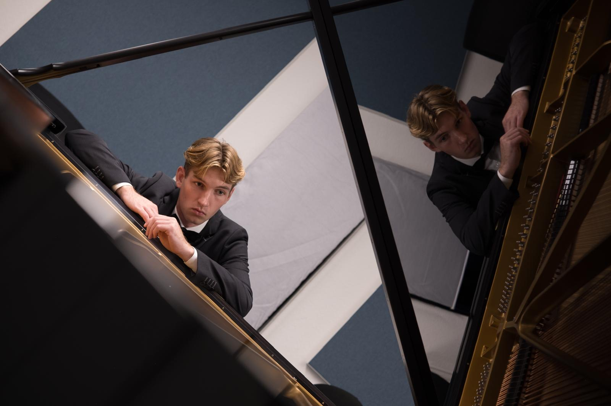
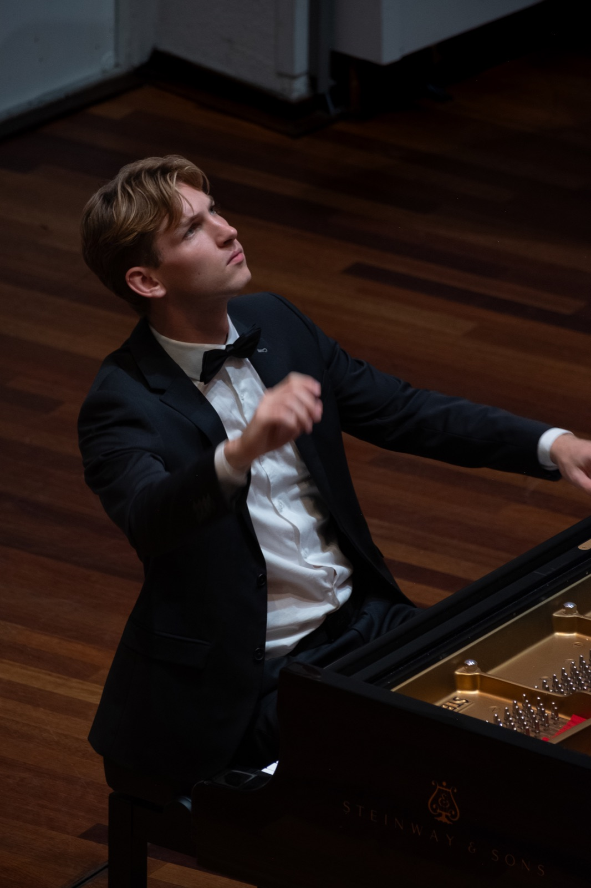
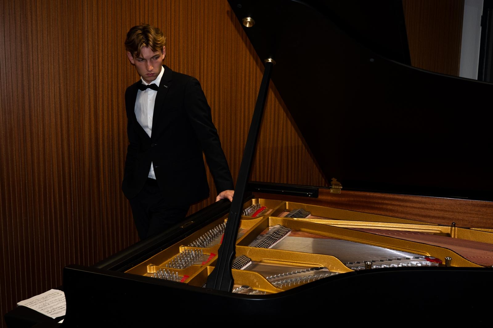
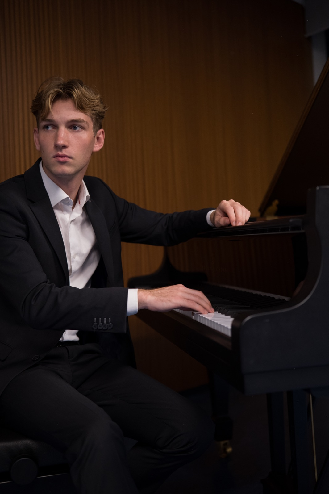
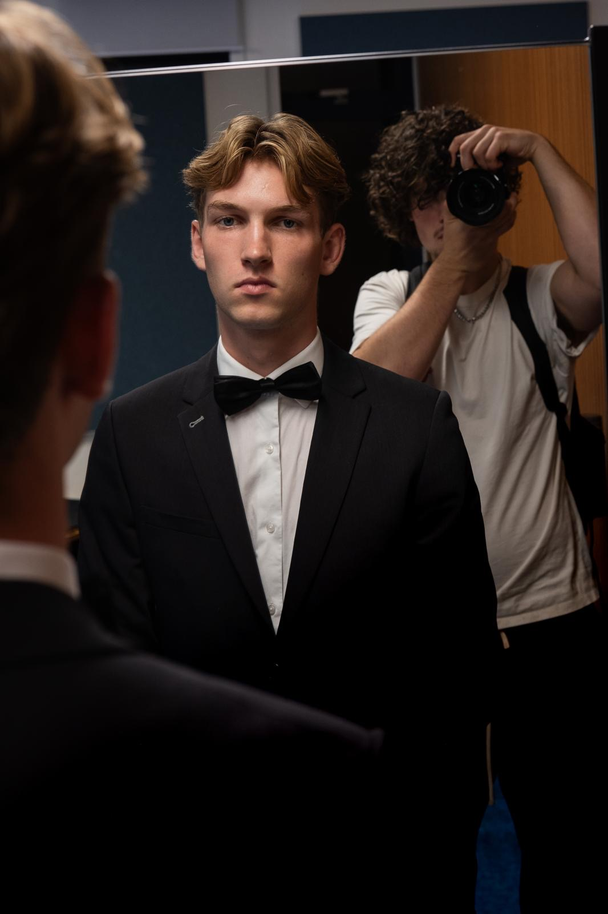
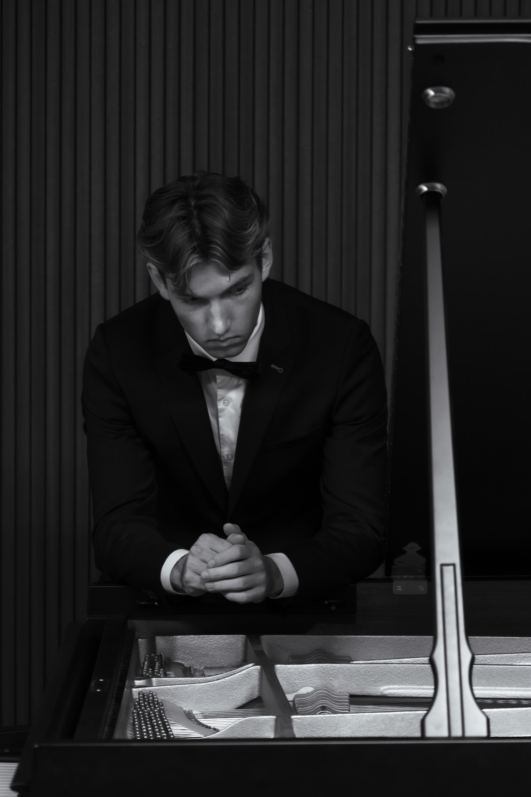

Lessen — studio & online
De helft van elke les is luisteren.
Hoe een les bij mij eruitziet, hoe je je in een jaar ontwikkelt en waar ik in geloof als docent — zodat je weet wat je kunt verwachten voordat je contact opneemt.



01Over de docent

Ive Snijders
Ik geef pianoles sinds het begin van mijn studie aan het conservatorium. Waar ik eerst alleen uitvoerend musicus wilde worden, droom ik nu van een combinatie met lesgeven. Door les te geven krijg ik de kans mijn grootste passie met anderen te delen, en tegelijkertijd mensen echt te helpen.
Persoonlijke begeleiding en een persoonlijke benadering staan in mijn lessen centraal. Daardoor kan ik lesgeven aan alle leeftijden en niveaus. Ik geef klassiek pianoles, maar dat betekent niet dat je alleen klassieke muziek gaat spelen. Je bepaalt zelf wat je speelt, en ik help je natuurlijk met de keuze van je repertoire en geef je advies.
De Nederlandse muziekeducatie staat al jarenlang op een ongelooflijk laag niveau. Waar je in andere Europese landen complete middelbareschoolopleidingen in het teken van muziek hebt, moet je het in Nederland vaak doen met een halfuurtje privéles per week. Mede daardoor is het percentage Nederlandse studenten dat een professionele muziekopleiding volgt extreem laag. Op de klassieke afdeling van het conservatorium in Maastricht is meer dan 90% van de studenten internationaal. Dat heeft weer tot gevolg dat er een groot tekort is aan nieuwe Nederlandstalige docenten.
In mijn lessen probeer ik niet per se de nieuwe generatie concertpianisten op te leiden. Wel zorg ik ervoor dat mijn leerlingen alle handvatten krijgen om hun droom in de muziekwereld waar te maken. Ik wil de stap naar een toekomst in de muziek voor iedereen mogelijk maken, de kansenongelijkheid verkleinen en de Nederlandse muziekeducatie naar een hoger niveau tillen.
— Ive
Zo verloopt een les
02Op schaal getekend
Binnenkomen & luisteren
Je speelt wat je hebt gestudeerd, van begin tot eind, zonder onderbreking. Ik luister alleen en maak aantekeningen.
Techniek
Techniek, maar altijd vanuit de muziek die voor ons ligt — nooit toonladders om de toonladders.
Repertoire
Het hart van de les. We zoeken de twee of drie maten die het stuk tegenhouden en lossen ze samen op: vingerzetting, klank, pedaal, vorm. Ik speel hier veel voor — je moet horen waar we naartoe werken, niet alleen erover lezen. Aan het eind van dit halfuur klinkt er iets in het stuk anders dan toen je binnenkwam.
De week erna
Een kort, uitgeschreven studieplan: wat, in welke volgorde en hoe lang.
Een les van 45 minuten heeft dezelfde opbouw, alleen compacter. Online lessen ook — met een tweede camera op je handen als je die hebt.
Zo ontwikkel je je
03Maand, periode, jaar
Wennen
Zithouding, handhouding, noten lezen in beide sleutels. We ontdekken hoe jij het beste leert — op gehoor, op het oog of door te analyseren — en spelen daarop in.
- Eén volledig kort stuk
- Een studieroutine die in je week past
- Lezen in een rustige, gelijkmatige puls
Een repertoire opbouwen
Drie of vier stukken in verschillende stijlen, samen gekozen. De techniek komt voort uit wat de stukken vragen, zodat het nooit als huiswerk voelt.
- Handen onafhankelijk van elkaar
- Eerste pedaal en dynamiek
- Elke dag vijf minuten van blad lezen
Spelen voor publiek
Eén keer per jaar spelen mijn leerlingen voor elkaar tijdens een informeel huiskamerconcert — vrijblijvend en gezellig. Voor velen is dat het moment waarop de piano niet langer iets privés is.
- Een kort programma dat je kunt uitvoeren
- Zelfstandig nieuwe stukken instuderen
- Eventueel examen- of conservatoriumdoelen
“Talent is vooral aandacht — en aandacht kun je leren.”

Eerst de klank, dan de noten.
Van een foute noot die mooi klinkt leer je meer dan van een goede noot zonder te luisteren. We beginnen altijd bij hoe het moet klinken.
Langzaam is geen straf.
Langzaam studeren is de snelste manier om iets te leren. Ik laat je zien hoe langzaam studeren als muziek voelt, en niet als wachten.
Speel wat je mooi vindt.
Bach en Chopin, zeker — maar ook filmmuziek, jazzstandards of het nummer van je bruiloft. Goede techniek trekt zich niets aan van genres.
Elke leerling leert zichzelf lesgeven.
Het echte doel is dat je mij op een dag niet meer nodig hebt: je slaat een nieuwe partituur open en weet hoe je eraan moet werken.
Zenuwen zijn een vaardigheid, geen zwakte.
Optreden — al is het maar voor één vriend — oefen je net als al het andere. We bereiden het bewust voor, in kleine stappen.
Lessen & tarieven
05Per les
| Les | Duur | Tarief |
|---|---|---|
| ProeflesKennismaken, spelen, beslissen. Vrijblijvend. | 30 min | gratis |
| Wekelijkse lesBeginners, kinderen, herintreders. | 45 min | € 48 |
| Wekelijkse lesGevorderd repertoire. | 60 min | € 62 |
| Voorbereiding conservatoriumTwee lessen per week, inclusief theorie en proefaudities. | 2 × 60 min | € 115 / week |
| Online lesVia videobellen, flexibel in te plannen. | 45 min | € 45 |
| TienrittenkaartVoor een onregelmatig rooster, zes maanden geldig. | 10 × 45 min | € 450 |
De tarieven gelden per les en worden per periode gefactureerd (vier periodes, 36 lessen per jaar, volgens de schoolvakanties van regio Zuid). Lessen die je meer dan 24 uur van tevoren afzegt, worden kosteloos verplaatst. Alle details staan in de algemene voorwaarden.
